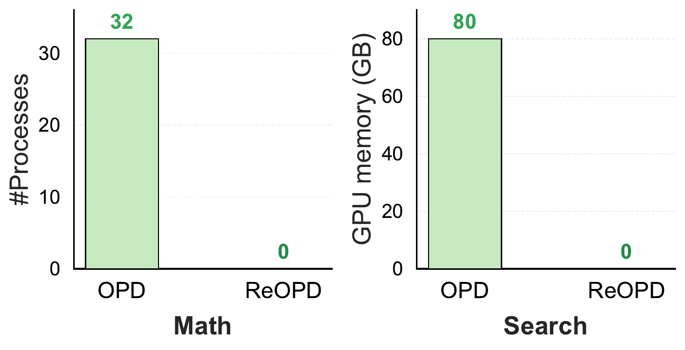

ReOPD keeps the benefits of on-policy distillation while removing environment interaction. It matches or improves OPD accuracy, trains much faster per step, and eliminates tool calls during student training by replaying teacher-recorded prefixes instead of executing fresh environment rollouts (student: Qwen3-4B-Instruct-2507, teacher: Qwen3-8B).
0
tool calls during student training
4–9×
faster per rollout step than online OPD
+2.7
avg. math accuracy over OPD (Qwen3-8B → 4B)
Abstract
On-policy distillation (OPD) for agentic tasks is costly: every update rolls the student through a live
environment and queries the teacher at each visited history. We propose Replayed-Prefix
On-Policy Distillation (ReOPD), an off-environment alternative that replays
pre-collected teacher trajectories as prefixes: the student acts at selected steps and receives dense
per-step teacher supervision, with no new environment interaction. Multi-turn OPD faces a prefix
trap — a two-sided shift between student occupancy and teacher reliability — which ReOPD resolves
with a step-decaying sampling schedule that favors early, lower-shift prefixes. Across math (Python-tool)
and search environments and multiple model scales, ReOPD preserves or improves OPD-level accuracy with
zero tool calls during training and at least 4× faster rollouts, turning expensive agent-environment
interaction into a reusable offline resource.
Method
On-policy distillation for agents without the environment: replay teacher prefixes instead of live rollouts.
Online OPD (top) keeps the environment alive during the whole training run: every update re-rolls the
student through the environment and queries the teacher at each visited history. ReOPD (bottom) replays
a teacher-forced prefix from an offline trajectory pool — collected for free while the teacher is
trained with RL — and lets the student act only at the supervised step, where the teacher's per-token
conditional is the distillation target. No action is ever executed against the environment.
OPD vs. ReOPD for agentic tasks. Up: OPD with an always-alive online environment, all steps weighted equally. Down: ReOPD with an offline trajectory pool; the environment is only needed when collecting the teacher's trajectories, and earlier steps contribute more to the loss.
Removing the environment does not remove the temporal structure of multi-turn learning. We identify a
prefix trap with a two-sided distribution shift: fully student-on-policy prefixes are relevant to
the student but can query the teacher where it is unreliable, while teacher-forced prefixes are reliable
but less relevant. ReOPD balances the two with a reliability-aware step-decay schedule: supervised
positions are sampled with probability pt ∝ κt
(κ = 0.6), concentrating supervision on early, low-shift prefixes. The decay is
applied purely at data-processing time, so the training loss itself stays unchanged.
One student, many environments. With OPD, operational complexity grows with the number of live environments. ReOPD collects each teacher's trajectories separately and merges them into a unified offline pool, so a single student can be distilled jointly without keeping any tool online.
Results
Distillation on mathematical reasoning. Each student is trained and evaluated in the
math (Python-tool) environment on six competition benchmarks, under teachers of increasing scale. Across
teacher scales, ReOPD improves over student-on-policy OPD — the teacher-reliability regime — and stays
close to OPD when the gap is small. GRPO is the teacher's own RL result, shown for reference.Distillation on search. Each student is trained and evaluated in the search
environment on general-QA and multi-hop-QA benchmarks († in-domain, *
out-of-domain). The teacher stays in the same Qwen3-4B family and remains reliable on student-induced
histories, so the student-occupancy shift dominates and ReOPD essentially matches student-on-policy
OPD.Multi-environment distillation: one student for both domains. A single Qwen3-4B
student is trained jointly across the math and search environments, distilled from each environment's own
RL-trained teacher. The joint student stays on par with student-on-policy OPD in each domain, without
keeping any environment online during training.
The results confirm the two regimes predicted by our analysis: ReOPD yields its largest gains when the
teacher–student gap is wide (math, e.g. AIME24 28.3 → 36.7 under the Qwen3-8B teacher) and essentially
matches student-on-policy OPD when the teacher stays reliable on student-induced histories (search). A
single fixed κ = 0.6 obtains the regime-appropriate behavior across tasks.
Efficiency
Unlike OPD, which must execute fresh environment rollouts and tool calls during every student update,
ReOPD replays teacher-recorded prefixes and therefore uses zero tool calls during student training
and is at least 4× faster per rollout (4.2× on math, 9.1× on search; see the teaser figure above).
The environment infrastructure disappears entirely from the training loop: OPD needs a 32-process
sandbox concurrency for math and an 80 GB-GPU retrieval server for search, while ReOPD needs
neither — and the gap only grows as more environments are added. Training completes within 3 hours on
8×H100.

The resources used by different environments. For math, the processes are utilized for
the execution of Python code in parallel. For search, the GPU memory is utilized for deploying the
embedding model and the storage of the Wikipedia embeddings. ReOPD needs neither during student
training.Favoring early, low-shift steps improves distillation. Both panels use ReOPD's
sampling implementation and put more training mass on early interaction steps, where the student stays
close to the teacher and the two-sided shift is small. (a) Sampling by chunk: drawing supervised
positions from early chunks yields the best student, and pushing mass to later chunks degrades it.
(b) Sampling with decay κ: applying the step-decay
κt as the sampling probability, a moderate decay outperforms
uniform sampling (κ = 1) and tracks the same trend. The student model is
Qwen3-4B-Instruct-2507, and the models in the legends are teacher models.
BibTeX
@misc{liao2026reopd,
title={Multi-Turn On-Policy Distillation with Prefix Replay},
author={Baohao Liao and Hanze Dong and Christof Monz and Xinxing Xu and Li Dong and Furu Wei},
year={2026},
eprint={2607.04763},
archivePrefix={arXiv},
primaryClass={cs.LG},
url={https://arxiv.org/abs/2607.04763},
}